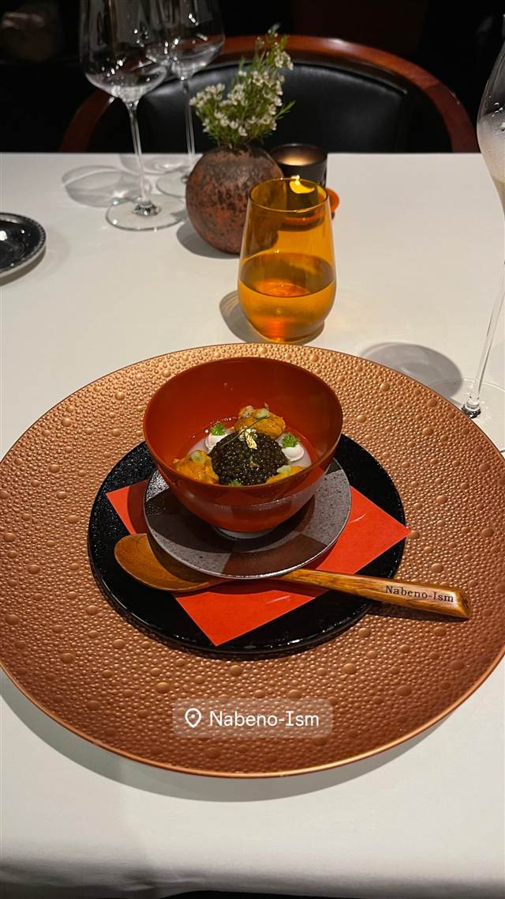

Nabeno-Ism（レストラン ナベノイズム）
頭のNを隠すと『あべの』になる店名のフレンチコース
Nabeno-Ism
浅草・隅田川沿いの一つ星フレンチ「Nabeno-Ism」は、恵比寿の「タイユバン・ロブション」で21年間シェフを務めた渡辺雄一郎氏が2016年に開いた店。店名は自身のあだ名と修業先・大阪あべのに由来し、江戸の食材をフランス料理の技法で仕立てるコースが持ち味。
TRIVIA
豆知識
- 店名「Nabeno-Ism」は店主のあだ名『ナベ』とismを組み合わせた造語で、頭のNを隠すと修業先・大阪『あべの』になる仕掛けがある
- 恵比寿のロブション時代はミシュラン三ツ星を9年連続で守った実績を持つ
REVIEWS
世間の評判
4.14食べログ
和と仏を融合した独創的な一皿
- そばがきなど和の要素を取り入れた独創性を評価する声が多い
- 目を奪われる美しい盛り付けを称賛する人が多い
- 高額な価格に見合うかは意見が分かれるという声もある
- 味わいが難解に感じられたという声もある
食べログ
| 創業 | 2016年開業 |
|---|---|
| 系譜 | のれん分けではない独立店。店主はロブショングループ出身。 |
| 看板 | 江戸の食材とフランス料理技術を融合させたコース。ウニとキャビアの一皿も供される。 |
| こだわり | 日本の四季や江戸東京野菜など伝統食材を取り入れ、フランス料理の技法で仕立てる。 |
| 掲載・評価 | ロブション時代はミシュラン三ツ星を9年連続で守った。独立後のNabeno-Ismも二つ星を2年連続獲得したが、2026年版ミシュランガイド東京では一つ星。 |
| どこから | 都心 |
| 営業時間 | 月 休み 火〜日 12:00-15:00、18:00-22:00 |
| 予算 | 昼 ¥20,000～¥29,999 夜 ¥40,000～¥49,999 |
| 定休日 | 月曜（不定休あり） |
| 予約 | 完全予約制 |
| 場所 | 浅草 東京都台東区駒形2-1-17 |
| メモ | 隅田川沿い、浅草に立地。 |
食べたもの：ウニとキャビアの一皿
NEARBY
近い店・同じ系統の店
-
 ★
喫茶店 浅草
金龍（喫茶店）
元は旅館だった建物で味わうサイフォン式コーヒー
昼 ¥1,000～¥1,999 夜 ¥1,000～¥1,999
★
喫茶店 浅草
金龍（喫茶店）
元は旅館だった建物で味わうサイフォン式コーヒー
昼 ¥1,000～¥1,999 夜 ¥1,000～¥1,999
-
 ★
二郎系(インスパイア) つくばエクスプレス浅草駅
自家製麺 No11 ASAKUSA
二郎→富士丸の系譜を継ぐ、板橋人気店の浅草2号店
昼 ¥1,000～¥1,999 夜 ¥1,000～¥1,999
★
二郎系(インスパイア) つくばエクスプレス浅草駅
自家製麺 No11 ASAKUSA
二郎→富士丸の系譜を継ぐ、板橋人気店の浅草2号店
昼 ¥1,000～¥1,999 夜 ¥1,000～¥1,999
-
 うなぎ 浅草
初小川（はつおがわ）
注文を受けてから捌く、継ぎ足し辛口だれの江戸前うな重
昼 ¥3,000～¥3,999 夜 ¥3,000～¥3,999
うなぎ 浅草
初小川（はつおがわ）
注文を受けてから捌く、継ぎ足し辛口だれの江戸前うな重
昼 ¥3,000～¥3,999 夜 ¥3,000～¥3,999
-
 カフェ 浅草
浅草きびだんご あづま
無添加ゆえ時間が経つと硬くなるため実演販売でできたてを提供している
昼 ～¥999 夜 ～¥999
カフェ 浅草
浅草きびだんご あづま
無添加ゆえ時間が経つと硬くなるため実演販売でできたてを提供している
昼 ～¥999 夜 ～¥999
-
 アイス・ジェラート 浅草
舟和（本店）
芋ようかんを考案しみつ豆を喫茶で初めて出した元祖の老舗和菓子店
昼 ¥1,000～¥1,999 夜 ¥1,000～¥1,999
アイス・ジェラート 浅草
舟和（本店）
芋ようかんを考案しみつ豆を喫茶で初めて出した元祖の老舗和菓子店
昼 ¥1,000～¥1,999 夜 ¥1,000～¥1,999
-
 スイーツ 浅草
三鳩堂
鳩・提灯・五重塔の三種を店頭で焼き上げる人形焼
スイーツ 浅草
三鳩堂
鳩・提灯・五重塔の三種を店頭で焼き上げる人形焼